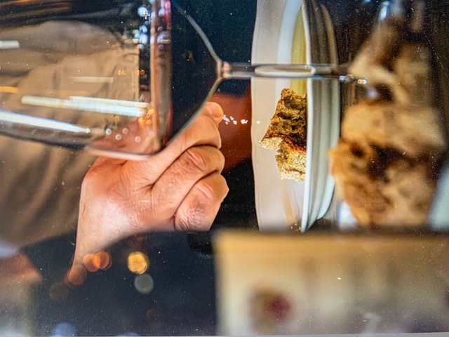

Articolo · 02 — 2026
IL NODO. Supermercati comunali. Welfare urbano o campanello d'allarme?
I supermercati comunali rappresentano una nuova forma di welfare urbano o sono il campanello d'allarme di un sistema economico che non riesce più a garantire uno dei diritti più elementari dell'uomo. Quello di poter mangiare ogni giorno.
Leggi l'articolo →

Articolo · 01 — 2026
Tra Destino e Caso
Benvenuti nel primo articolo di THE SALT JOURNAL. Due forze invisibili che hanno influenzato profondamente il mio percorso di vita. Proprio come il sale.
Leggi l'articolo →
Nuovi articoli in arrivo. Gli articoli precedenti saranno raccolti nell'archivio per anno.